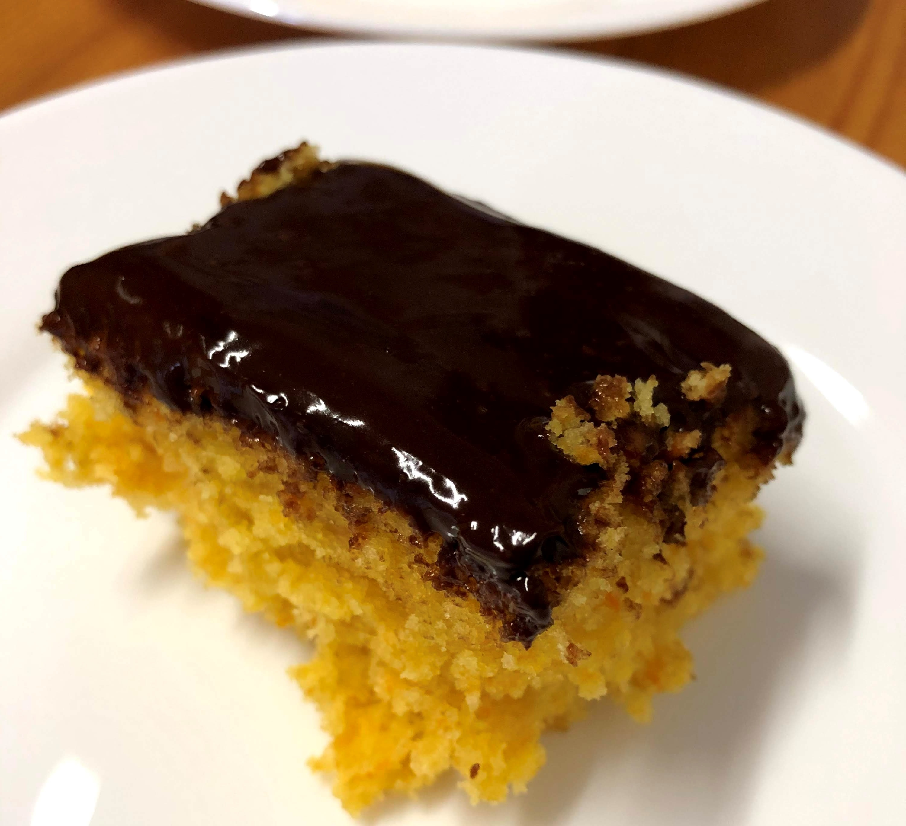

Bolo de cenoura

Ingredientes
- 1/2 xícara (chá) de óleo
- 3 cenouras médias
- 4 ovos
- 1 1/2 xícara (chá) de açúcar
- 2 1/2 xícaras (chá) de farinha de trigo
- 1 colher (sopa) de fermento
Modo de preparo
- Bater no liquidificador o óleo, a cenoura e o ovo.
- Adicionar o açúcar e voltar a bater.
- Passar a mistura para um bowl e adicionar a farinha e o fermento, misturando até envolver bem.
- Assar a 180º C por 40 minutos.